La luz y la evolución de su concepto
Por muchos años no hubo mucha preocupación por saber qué es la luz. Parecía algo bastante claro: era algo que los objetos emitían para que los pudiéramos ver. Si bien era bien sabido su compartimiento más básico: se refleja, se refracta, se transmite y viene en colores, la investigación no iba más allá de eso. Sin embargo, hubo algunos intentos por comprender mejor su naturaleza; entre estos se destacan los de Claudio Ptolomeo (Siglo I), Abu Ali al-Haasan ibn al-Haytham -también conocido como Avicena- (Siglo X) y Robert Grosseteste y su alumno Roger Bacon (Siglos XII y XIII) pero todos estos estudios iban más a lo fenomenológico que a lo teórico por lo que no se avanzó demasiado en el entendimiento de la luz.
Recién en el siglo XVII empiezan los avances más significativos. En el año 1621 Snel formuló su ley de la refracción (no publicada hasta 1703) y Pierre de Fermat formuló El Principio del Menor Tiempo, que explica la Ley de Snell. Pero la real profundización vino con Robert Hooke en la década de 1660.
Hooke propuso por primera vez que la luz era una onda muy veloz. Esta hipótesis competía con la hipótesis de Isaac Newton, quien aseguraba que la luz estaba compuesta por pequeñas partículas que viajaban en linea recta a través del espacio. Finalmente fue Newton quien ganó la competencia, muy probablemente por la gran fama que tenía en el ámbito científico.
Pero en la ciencia nunca se cierra del todo un capítulo y en el año 1801 en científico Thomas Young realizó el experimento "de la doble rendija" (ilustrado en la Figura 1) cuyo resultado le dio nuevamente peso a la hipótesis de Hooke, ya que mostraba un patrón de luz que sólo podía ser resultado de una interferencia de ondas.
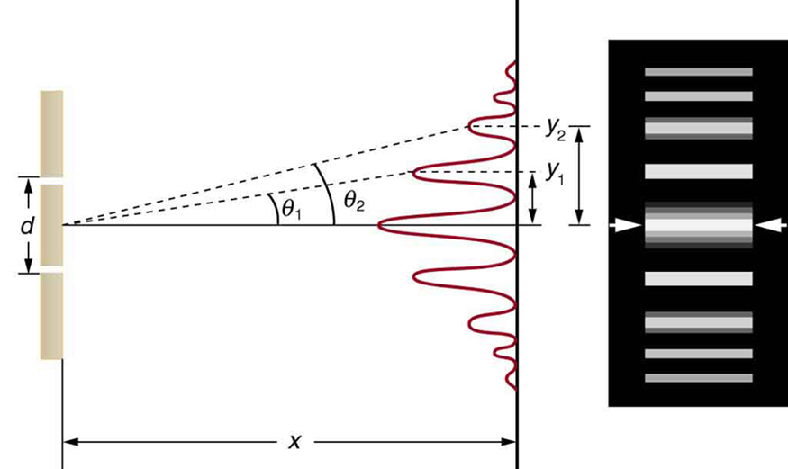
Fig. 1
Espectro y Espectroscopía
La palabra espectro fue acuñada por Isaac Newton, basándose en la palabra latina spectrum que significa "apariencia". Pero por más de un siglo el único uso que se le daba al espectro era para estudiar la naturaleza de la luz. Fue recién con William Wollaston en 1801 cuando comenzó a cambiar. Él notó que el espectro de la luz del Sol tenía líneas oscuras que en principio creyó aleatorias producto del material con el que estaba hecho el prisma usado para descomponer la luz. Pero Joseph Fraunhofer utilizando una mayor dispersión pudo determinar la posición de cada una de las líneas y notó que claramente no eran aleatorias. También encontró el espectro de Venus y de varias estrellas, viendo que cada uno era diferente.
La pregunta ahora era qué causaba estas lineas. La espectroscopía química estaba recién en sus comienzos, pero ya se sabía que se podía tomar el espectro de una llama de fuego y que se obtenían espectros diferentes dependiendo del elemento que se quemaba. En 1823 John Herschel propuso que la espectroscopía podía ser utilizada para hacer un análisis químico y que las líneas oscuras del espectro del Sol revelarían su composición.
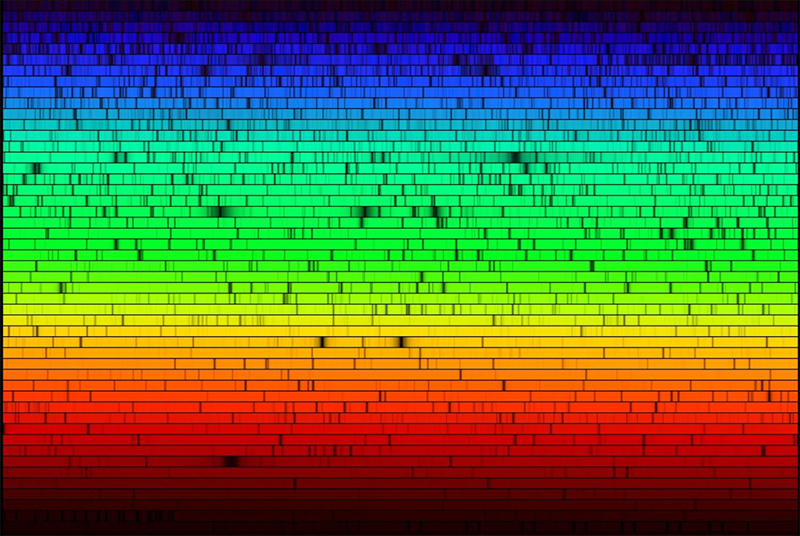
Fig. 2 : Espectro de la luz del Sol
La evolución de la espectroscopía fue avanzando, por ejemplo, David Brewster determinó qué líneas provenían de la luz del Sol y cuáles de la Tierra. Pero nadie se había puesto a medir con precisión la posición de estas líneas como lo hicieron Gustav Kirchhoff y Robert Bunsen, quienes inventaron el primer espectrógrafo y le dieron origen a la espectroscopía.
La espectroscopía en la astronomía
Durante la década de 1860 Angelo Secchi tomó los espectros de más de 4000 estrellas y concluyó que podían dividirse en 4 grupos que formaban una secuencia desde el azul o blanco cuyos espectros tenían unas pocas líneas en absorción al rojo, llenas de líneas.
La espectroscopía estelar avanzó junto con la fotografía. Las placas de plata introducidas en la década de 1870 permitían un mayor tiempo de exposición permitiendo recolectar más luz y así poder hacer análisis similares a los que se habían hecho con el Sol con muchas más estrellas.
Con la posibilidad de obtener mejores espectros de las estrellas, comenzaron a hacerse intentos de clasificar estos espectros como lo había hecho Angelo Secchi. Hermann Vogel fue uno de los que propuso un método de clasificación usando progresiones de las líneas de H y He. Antonia Maury con las observaciones de Edward Pickering realiza un catálogo clasificando las estrellas en 22 grupos, dividiéndolas según el ancho de las lineas. Annie Jump Cannon propuso una clasificación basándose en la intensidad de las líneas de absorsión de la serie de Balmer, en principio en orden alfabético (A B C D E F G H I J K L M así hasta la P, en orden decreciente de intensidad), luego se notó que algunos de los grupos estaban duplicados y fueron retirados, luego se resolvió que el orden utilizado era erróneo y se volvió a agregar algunos de los grupos retirados llegando al orden O B A F G K M, con temperatura decreciente de izquierda a derecha.
Pero ahora el problema era que había tres tipos diferentes de clasificar estrellas y había que ponerse de acuerdo. Para esto se llamó a una votación en la que 28 especialistas de 7 naciones distintas eligieron (24 a 4) en usar la clasificación propuesta por Cannon.
Este sistema era útil, pero sólo tenía en cuenta los efectos por temperatura de la estrella por lo que fue necesario mejorarlo. Ya en 1943 se propuso un sistema basado en líneas que son sensibles a la gravedad estelar, ideado por William W. Morgan, Philip Childs Keenan y Edith Kellman que usualmente se lo conoce como Morgan Keenan Kellman o simplemente MKK. Al utilizarse líneas espectrales sensibles a la gravedad de la superficie se obtiene información sobre la densidad de las estrellas. Como el radio de una estrella gigante es muy superior al de una enana blanca de la misma masa, la gravedad es muy diferente manifestándose en la intensidad y en la forma de las líneas espectrales. Este nuevo sistema no se contrapone con el sistema de Cannon sino que es más bien una extensión. Además, le agrega subtipos espectrales (por ejemplo las de tipo A ahora pueden ser A0, A1,..,A9) y tiene en cuenta las clases de luminosidad, indicadas en números romanos del I al V (ver subcapítulo de diagrama Hertzsprung-Russell ).
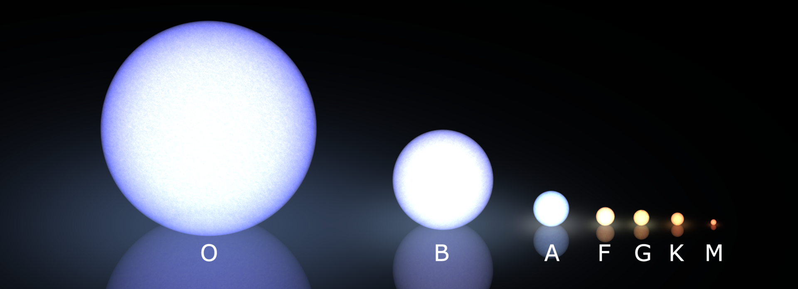
Fig. 3 : Representación de los distintos tipos espectrales
Tipos espectrales y sus principales características
Tipo O
Las estrellas tipo O son las más calientes de todas las estrellas normales. Sus espectros presentan líneas de He I y He II. La clave para identificar el subtipo espectral está en las relaciones entre las líneas de He I y He II; a medida que baja la temperatura crece la intensidad del He I y decrece la del He II. Su temperatura superficial va entre los 28.000K y 50.000K Sus masas son superiores a las 16 masas solares y sus radios superan los 6 radios solares. Sus luminosidades bolométricas son mayores a 30.0000 veces la Luminosidad Solar.
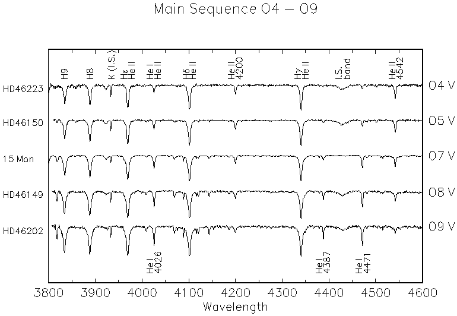
Fig. 4 : Ejemplos de espectros de estrellas O
Tipo B
Los espectros de estrellas tipo B se diferencian, principalmente, de las tipo O por la ausencia de las líneas de absorción de He II. El máximo de absorción de He I pasa aproximadamente por las tipo B2 y decrece hacia los tipos más fríos. Una de las características típicas de las estrellas tipo B es la gran intensidad del salto de Balmer. Sus temperaturas varían entre los 10.000K y los 30.000K. Sus masas oscilan entre las 2 y las 15 masas solares y sus radios, desde los 1,8 a 6,6 radios solares. Sus luminosidades bolométricas pueden llegar a más de 25,000 veces la luminosidad del Sol.
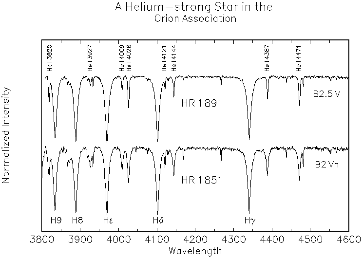
Fig. 5 : Ejemplos de espectros tipo B
Tipo A
En estas estrellas las líneas de He I ya no son visibles. La línea K del Ca II comienza a ser visible, aumentando aún más hacia los subtipos más fríos. En las A0 alcanzan el máximo de H I, decreciendo hacia los tipos más tardíos. También comienzan a ser visibles las líneas metálicas en el espectro.Sus temperaturas superficiales van desde los 7.100K a los 9.600K. Sus masas tienen un valor mínimo de 1,4 masas solares y un máximo de 2,1. Los radios toman valores entre los 1,4 radios solares y 1,8 radios solares. La luminosidad bolométrica oscila entre 25 y 5 veces la del Sol.
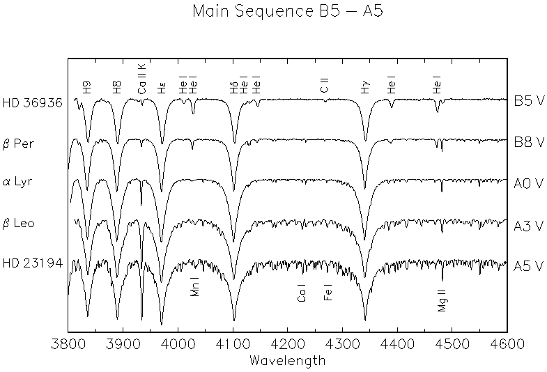
Tipo F
Tienen temperaturas superficiales que van entre 6.000K y 7.000K. Comienzan a ser más débiles las líneas del H I y más fuertes las H y K del Ca II. Empiezan a aparecer más líneas metálicas como las de Fe I y Fe II, Cr I y Cr II. Su masa está entre las 1,04 y 1,4 masas solares y su radio entre 1,15 y 1,4 radios solares. Su luminosidad bolométrica va desde 1,5 a 5 veces la luminosidad del Sol.
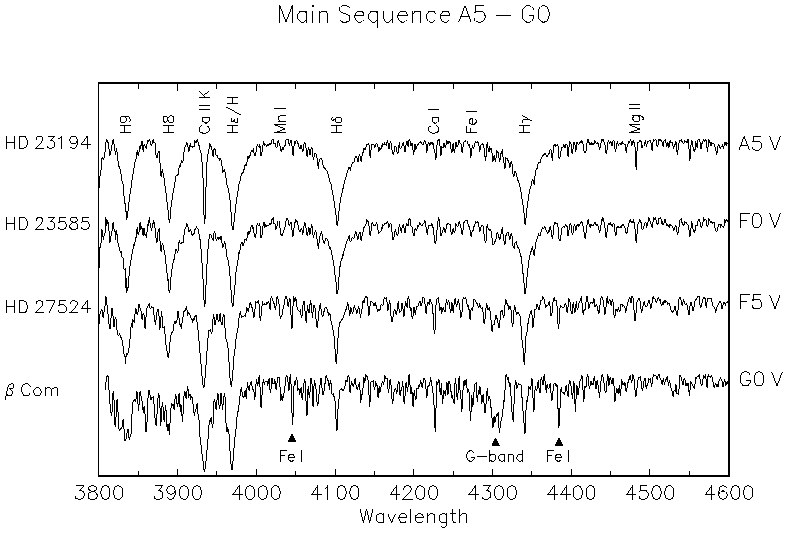
Tipo G
Las estrellas tipoG tienen al Sol como su "representante" más conocido. Su temperatura superficial va desde los 4.600K hasta los 5.600K y su masa de 0,8 a 1,04 masas solares. El radio puede tener un mínimo de 0,96 radios solares y un máximo de 1,15 radios solares. Su luminosidad bolométrica va de 0,6 a 1,5 veces la luminosidad solar. En su espectro podemos ver que las líneas del hidrógeno ya están muy débiles (y se van debilitando en cada subtipo más tardío) y que las líneas metálicas van aumentando la intensidad. La banda G ahora es claramente visible (CH) y las líneas H y K del calcio son muy intensas, sobre todo en el subtipo G0.
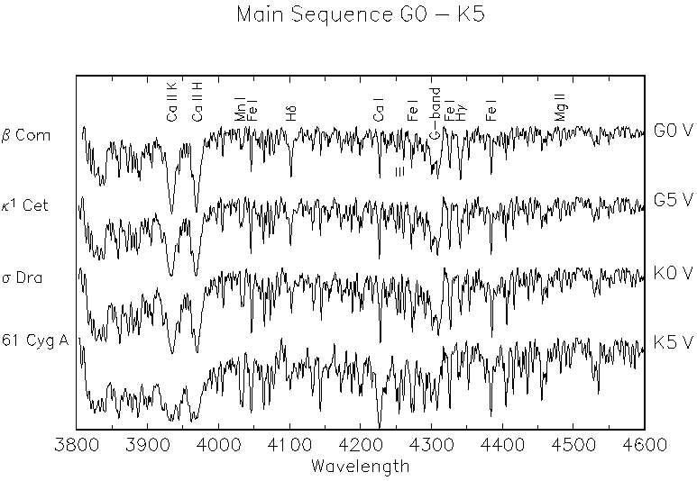
Fig. 8 : Ejemplos de estrellas G tempranas y tardías estrellas K tempranas y tardías.
Tipo K
Sus temperaturas van desde los 3.700K a los 5.200K y tienen un color anaranjado. Su masa tiene un mínimo de 0,45 masas solares y un máximo de 0,8 masas solares. Tienne un radio de entre 0,7 y 0,96 radios solares y su luminosidad bolométrica es de 0,08 a 0,6 veces la luminosidad del Sol. Su espectro se caracteriza por la marcada presencia de líneas de metales y por tener líneas de H I con una intensidad insignificante. La línea de 422,7 nm del Ca I se puede ver claramente al igual que las bandas H, K y G. A partir del subtipo K5 se empiezan a ver las líneas del TiO. Se puede ver dos espectros ejemlpo en las Figuras 8 y 9.
Tipo M
Las estrellas tipo M son de color rojo y tienen temperaturas que rondan los 3.000K. En su espectro pueden verse claramente la línea de 4227A del Ca I y a medida que vemos subtipos más tardíos vemos como aumenta la intensidad de las bandas del TiO. También pueden observarse líneas de metales neutros (sin ionizar). Su masa es menor a las 0,45 masas solares y su radio va por debajo de los 0,7 radios solares. La luminosidad bolométrica de las estrellas tipo M es menor a 0,07 veces la luminosidad del Sol.
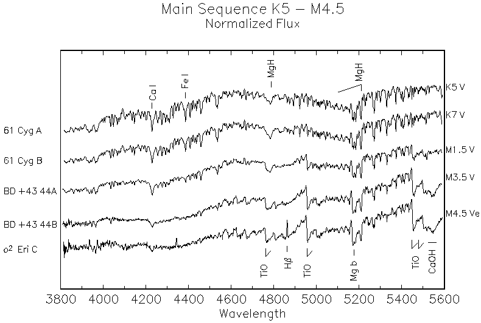
Criterios espectroscópicos para una clasificación "básica":
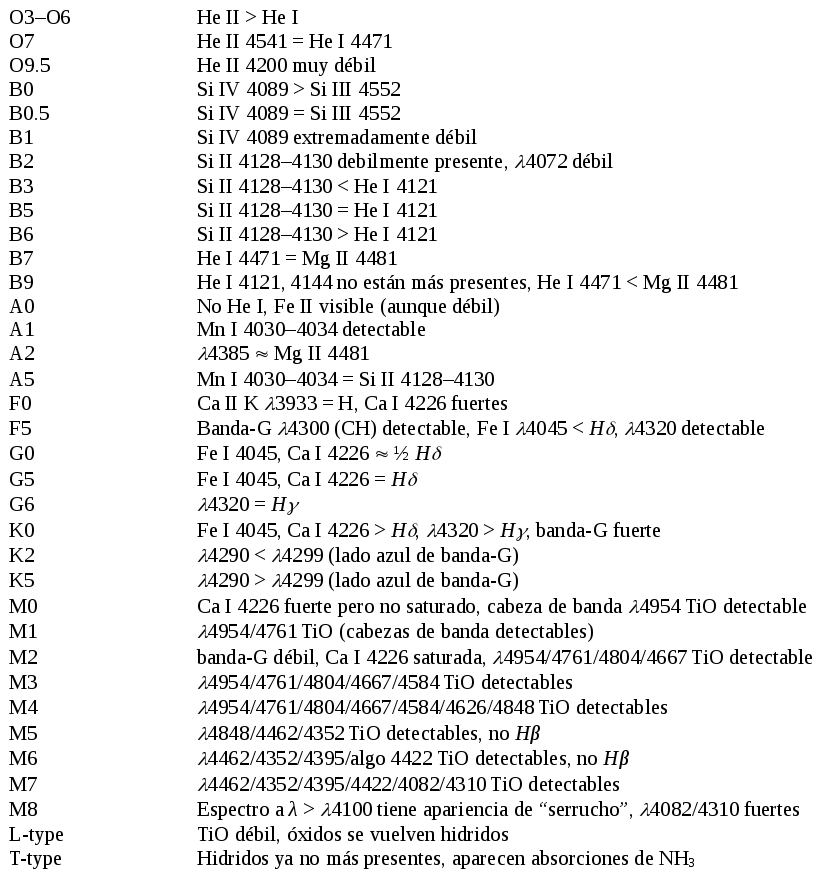
Pequeño resumen de los distintos tipos espectrales
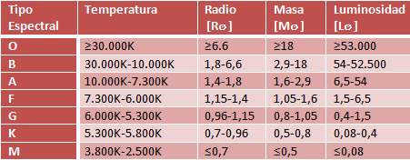
[1]
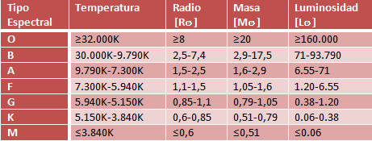
[2]
(Todos los valores son para estrellas de clase de luminosidad V)
Bibliografía
The Basic Of Spectroscopy - Ball, David W.- Spie Press - 1962
The Cambridge Story of Science Vol. 5 - Editado por Mary Jo Nye - Press Syndicate of the University of Cambridge - 2003
Fundamental Astronomy (5th Ed.) - Karttunen, H. et al. - Springer - 2007
Stellar Spectral Clasification - Richard O. Gray y Christopher J. Corbally - Princeton University Press- 2009
[1] http://www.handprint.com/ASTRO/specclass.html
[2] Allen's Astrophysical Quantities (4th Ed) - Cox, A.N. (ed.) - Springer - 2001
http://www.atnf.csiro.au/outreach//education/senior/astrophysics/photometry_colour.html